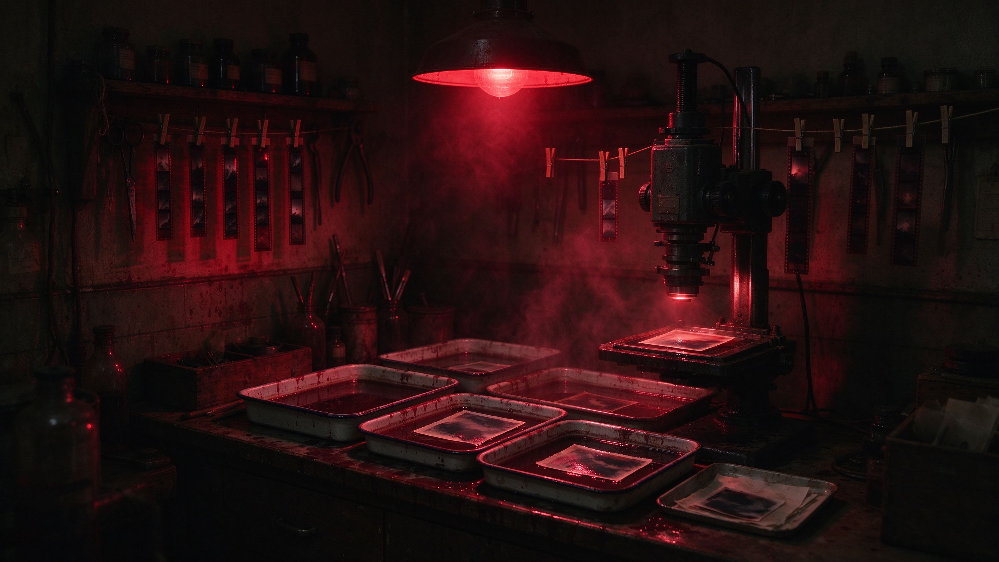
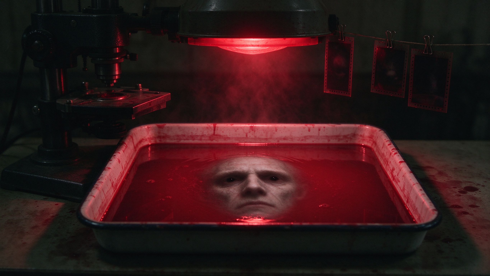

老 暗 房
红色安全灯亮着 · 显影盘里，照片正在慢慢浮现
已显影 0 / 6 张底片
冲洗工序 · 药液齐了，先后却大有讲究
显影、停显、定影、水洗——错一步，前功尽弃
显影液
停显液
定影液
水洗
显影盘 ① · 等待显影
浸入显影液
显影参数 · 药液温度 / 显影时间
温度
16℃
18℃
20℃
22℃
24℃
时间
1分钟
2分钟
3分钟
4分钟
5分钟
回南天药液温度浮动大。调不对，照片不是显不出来，就是显过头。

……那张脸，在看你。
底片册 · 可翻动 / 叠加
共6张底片
· 照片在显影液里会慢慢显现，急不得。
· 每张底片翻到背面，针尖刻着一个字——连起来，是思粤想对你说的话。
· 若你想把两张底片
叠进同一台放大机
……（慎重，那叫"重曝"）
把合影与单人照叠放（重曝）
走向暗房深处
底片册里，还夹着一张没编号的底片……
◎ 手记扉页，压着一枚褪色的私章
← 回到明亮的前厅